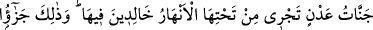
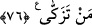
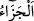
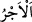

“işte sırf bunlar içindir.” Îmanları ve sâlih amelleri sebebiyle sâlih ameller işleyen
mü’minler içindir.
Âyette sâdece îman edenlerle, îman ve sâlih ameli bir araya getirenler arasındaki
farka işâret vardır. Çünkü cennette yüksek dereceler ikincilere, diğerleri ise başkalarına
âiddir.
76. İçinde ebedî kalacakları, zemininden ırmaklar akan Adn cennetleri! İşte
arınanların mükâfâtı budur.
“İçinde ebedî kalacakları, zemîninden ırmaklar akan” dâimâ o cennetin köşklerinin
ve ağaçlarının altından sular, nehirler akan “Adn cennetleri! İşte” günahlarından
“arınanların mükâfâtı budur.” Yani, küfür ve isyanların kirlerinden, îmân ve sâlih
amellerle temizlenenlerin mükâfâtı zikredilen büyük ecirlerdir.
“ bir davranışa, yapılan hayır ise hayır cinsinden, şer ise şer cinsinden yeterince
karşılık vermektir. “el-Ecr” ile “el-cezâ” arasındaki fark şöyledir: “ bir
sözleşmede veya sözleşme yerine geçen bir şeyde bedel olarak verilen karşılıktır. Zarar
konusunda değil sâdece fayda konusunda kullanılır. “el-Ceza” ise sözleşme olan konuda
da olmayan konuda da kullanılır. Faydalı ve zararlı olan karşılık için de kullanılır.
Âyette Allâh’ın sevâbının sürekli olduğu pekiştirilmiştir. Bir hadiste şöyle buyrulur:
“(Cennetteki) yüksek derecelerin sahiplerine diğer cennet ehli olanlar, sizin
gökyüzünde akıp giden yıldızları gördüğünüz gibi bakarlar. Ebû Bekir ve Ömer de
onlardandır ve buna lâyıktırlar.”[89]
Fir’avn’un, îman eden bu kimselere savurduğu tehdidleri icrâ ettiği Kur’an’da
bildirilmediği ve haberler arasında da böyle bir bilgi bulunmadığı söylenmiştir. Tefsîr-i
Kebîr’de İbn Abbas (r. anhümâ)’dan naklen şöyle denilmiştir: “Onlar o günün
sabahında sihirbaz idiler, akşamında ise şehid oldular.” Bahru’l-ulûm’da ise şöyle
denilmiştir: “O günün sabahında kâfirdiler, akşamında ise iyilerden ve şehidlerden
oldular.”
Mesnevî’de der ki:
Mel‘ûn Fir’avun’un zamanında sihirbazlar
Mûsâ ile kin güderek mücâdeleye giriştiler.
Fakat onu öne geçirdiler,
Sihirbazlar onu mükerrem tuttular, saygı gösterdiler
Çünkü ona “Ferman senin.
İstiyorsan önce sen asânı at” dediler.